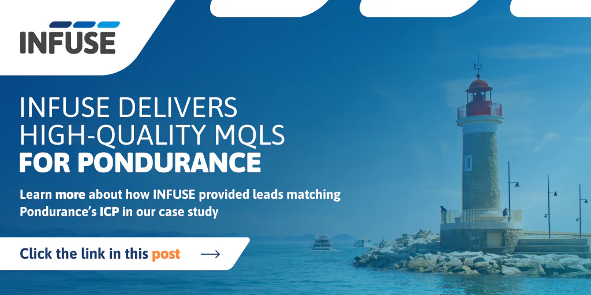
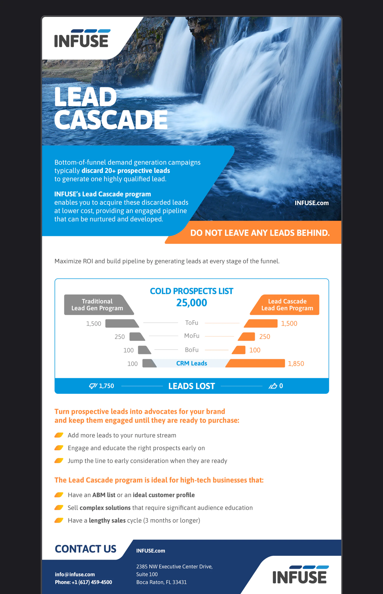
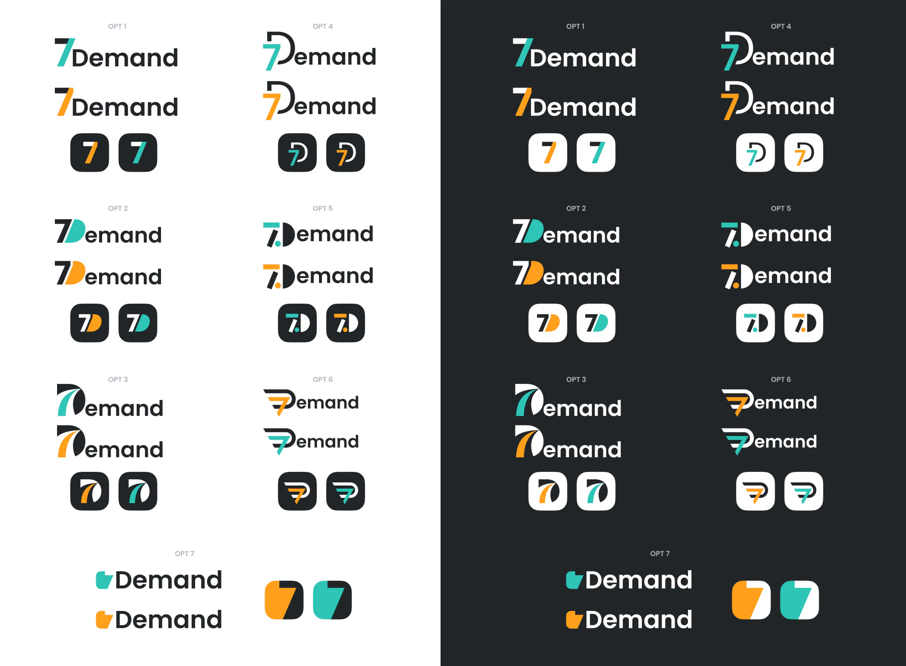
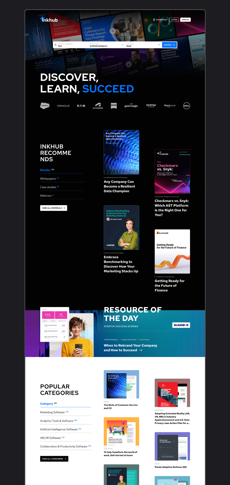

Visual and marketing work
Before product work I spent years on brand and marketing visuals — logos, campaign banners, social formats, and landing pages. Same craft, different format: hierarchy, a few directions instead of one safe option, and a layout that still works when the crop changes.
This page is a short selection, not the full archive.
Promo and campaign visuals
Formats for sales and paid traffic. I usually start with two directions, then lock one.

B2B marketing
Campaign layouts for INFUSE. Same brand colors and type, different job: a LinkedIn banner versus a long page with a chart and a funnel. The system stays, the hook and the density change.

7Demand logo options
A short logo search for a demand-generation brand. I tried seven directions around the same idea: the number 7 as a mark, not only as a letter. The goal was a sign that works in a wordmark and as a small app icon, in light and dark.

Inkhub — resource library layout
Home layout for a B2B content library. The page had to show recommendations, a resource of the day, and categories without turning into a long dump of cards. I designed the structure first — what you see before you search — then the search results with filters by type, topic, and company.
